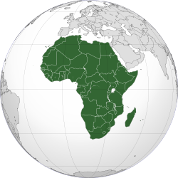

Africa |
|
O continente africano possui uma das maiores diversidades culturais do planeta. Na chamada África Branca, ao norte, predominam os povos caucasóides e semitas e na chamada África Negra, ao sul do Deserto do Saara, encontram-se os povos pigmeus, bosquímanos, hotentotes, sudaneses e os bantos. Esta diversidade por sua vez, se reflete nas mais de mil línguas diferentes que existem no continente africano, sem contar os inúmeros dialetos. Em algumas regiões inclusive, fala-se o português com algumas influências locais, como Moçambique e Angola. O terceiro maior continente da terra, situado entre os Trópicos de Câncer e de Capricórnio, possui baixa densidade demográfica como conseqüência das características de seu território. Com uma extensão de cerca de 30 milhões de km² e mais de 800 milhões de habitantes em 54 países, a África é freqüentemente dividida em cinco regiões de acordo com características geográficas e demográficas: a África Oriental, África Ocidental, África Setentrional, África Central e África Meridional. |
